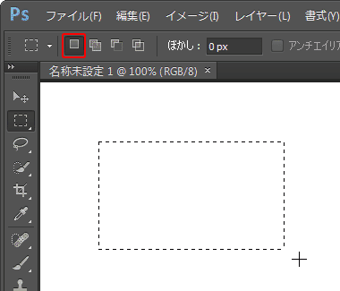
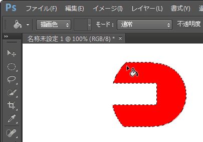

第4章 選択範囲
第1節 選択範囲の使用
本項では、各種選択範囲で使用できるオプションについて学習します。
第3項 選択範囲オプション
この項で学習する内容
- 各種選択範囲に共通で使用できるオプションについて理解する。
選択範囲オプション
メニューバー[ファイル]-[新規]を選び、
[プリセット]から[Photoshop初期設定]を選択し、新規ファイルを作成します。
新規ファイルが作成できたら[長方形選択ツール]を選択し、
[コントロールパネル]を確認しましょう。
4種類の「選択範囲オプション」が表示されています。
- 既に選択範囲が存在すれば、それを削除し、新規に選択範囲を作成します。
- 現在の選択範囲に、さらに選択範囲を追加します。
- 現在の選択範囲から一部分を削除します。
- 現在の選択範囲と重なった部分だけを共通範囲として選択範囲を残します。
オプションを切り替えて選択範囲を作成する
オプションを切り替えて、選択範囲を作成しましょう。
まず、[新規選択]オプションを選択した状態で任意の大きさの長方形の選択範囲を作成します。

次に[楕円形選択ツール]を選択した後、[選択範囲に追加]オプションを選択した状態で、
先ほどの長方形選択範囲に追加する形で楕円形の選択範囲を作成します。
※カーソルの右下に「+」マークが表示されます。
続いて、[現在の選択範囲から一部削除]オプションを選択した状態で、
上で作成した選択範囲から長方形状の選択範囲で削除します。
※カーソルの右下に「−」マークが表示されます。
最後に、[現在の選択範囲との共通範囲]オプションを選択した状態で、
上で作成された選択範囲に重なるように楕円形の選択範囲を作成します。
※カーソルの右下に「×」マークが表示されます。
作成された選択範囲に、[塗りつぶしツール]を使って選択範囲を任意の色で塗りつぶしましょう。

ワンポイント
各オプションにショートカットキーが割り当てられています。
[新規選択]オプションを選択した状態で、下記キーを押し続けることで、
それぞれのオプション機能に切り替わります。
[選択範囲に追加]：【Shiftキー】
[現在の選択範囲から一部削除]：【Altキー】〔Optionキー〕
[現在の選択範囲との共通範囲]：【Shift＋Altキー】〔Shift＋Optionキー〕
複雑な選択範囲も選択範囲オプションを使い分けることで、
自在に選択範囲を作成することができます。
ぜひ、この選択範囲オプションは覚えておきましょう。
すべてを選択する
メニューバーの[選択範囲]-[すべてを選択]でカンバス全体を選択できます。

選択できたらメニューバーの[編集]-[消去]で
先ほど塗りつぶしたものを消去します。
ワンポイント
【Ctrl＋Aキー】〔Command＋Aキー〕でも[すべてを選択]と同じ操作ができます。
選択範囲をぼかす
コントロールパネルの[ぼかし]に数値を入力することで、選択範囲の周辺をぼかすことができます。
ただし、選択範囲を作成する前に数値を入れなければ[ぼかし]は適用されません。
今回はあらかじめ《20px》にしておきます。
画面上の適当な位置で、任意の大きさの長方形の選択範囲を作成し、
[塗りつぶしツール]を使って任意の色で塗りつぶします。
「ぼかし」が設定されているため、選択範囲の周辺がぼけています。
[ヒストリーパネル]を使用して、最初の状態に戻りましょう。
選択範囲を反転する
今度は「選択範囲の反転」を使用します。
[ぼかし]は《20px》に設定し、任意の大きさの楕円形選択範囲を作成します。
メニューバーの[選択範囲]-[選択範囲を反転]を選びます。
選択範囲が反転されました。

この状態で[塗りつぶしツール]を使って、楕円の外側を塗りつぶしてみましょう。
選択範囲が反転され、楕円形選択範囲の外側が塗りつぶされます。
[ヒストリーパネル]を使用して、最初の状態に戻りましょう。
選択範囲を作成したあとに、「ぼかし」に数値を入れても選択範囲をぼかすことができません。
選択範囲を作成したあとに、選択範囲をぼかす場合には、
メニューバーの[選択範囲]-[選択範囲を変更]から[境界をぼかす]を選び、
数値を入力することでぼかすことができます。
「境界をぼかす」の選択

「境界をぼかす」ダイアログボックス
また、コントロールパネルの「ぼかし」の設定は、
再入力するまで前回入力したものが維持されます。
新しく選択範囲を作成する際は、
コントロールパネルに「ぼかし」の数値が入力されているかどうかを
確認してから選択範囲を作成しましょう。
アンチエイリアスのオンとオフ
アンチエイリアスとは、画像の周囲のピクセルをなめらかにする機能です。
コントロールパネルの[ぼかし]は《0px》に設定しておき、
[アンチエイリアス]のチェックボックスを「オン」にしておきます。
画像の左側に適当な大きさで楕円形の選択範囲を作成し、
[塗りつぶしツール]で選択範囲を塗りつぶします。
※描画色は何色でも構いません。
次に対比するため、[アンチエイリアス]のチェックボックスを「オフ」にし、
今度は画像の右側に同じように選択範囲を作成し、
[塗りつぶしツール]で選択範囲を塗りつぶします。
選択範囲を解除して[ズームツール]で拡大し、二つの画像の違いをよく見てみましょう。
アンチエイリアスは、選択範囲の境界部分を少しぼかすことによって、なめらかにします。
フォトショップのようなビットマップ画像の作成では、
アンチエイリアスを常に「オン」の状態にしておきましょう。
この項のまとめ
- 選択範囲のオプション
- ・新規選択：新規に選択範囲を作成する。
・選択範囲に追加：現在の選択範囲に、さらに選択範囲を追加する。
・現在の選択範囲から一部削除：現在の選択範囲から削除する。
・現在の選択範囲との共通範囲：現在の選択範囲と重なった部分だけを共通範囲として残す。 - その他の選択範囲オプション
- ・ぼかし：選択範囲の境界線に「ぼかし」を設定できる。あらかじめ設定しておく必要がある。
・アンチエイリアス：「オン」にすることで、選択範囲の境界線をなめらかな状態にする。 - カンバスすべてを選択する方法
- ・メニューバーの[選択範囲]-[すべてを選択]でカンバスすべてを選択できる。
・全選択のショートカットキーは【Ctrl＋Aキー】〔Command＋Aキー〕。 - 選択範囲を反転する方法
- ・メニューバーの[選択範囲]-[選択範囲を反転]で選択範囲を反転できる。
・選択反転のショートカットキーは【Ctrl＋Shift＋Iキー】〔Command＋Shift＋Iキー〕。
以上でこの項の学習は終了です。
ファイルは閉じて次の項へ進んでください。